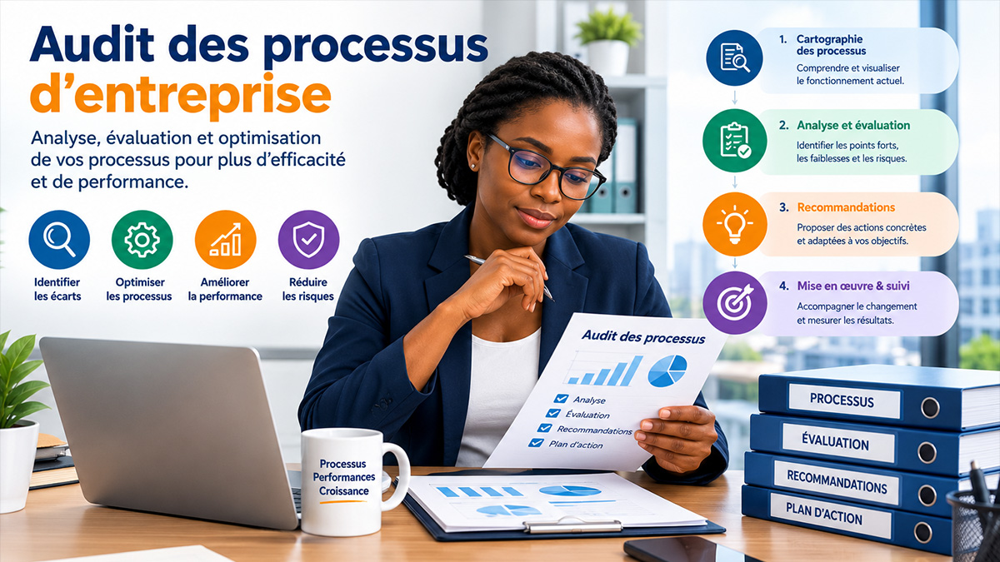

La digitalisation n'est pas un projet r�serv� aux grandes entreprises. Pour les PME en C�te d'Ivoire, elle repr�sente un levier concret d'efficacit�, de r�duction des co�ts et de visibilit�. Mais par o� commencer ? Voici une feuille de route simple et actionnable.
1. Faire un audit des processus existants
Avant de choisir un outil, il faut comprendre comment votre entreprise fonctionne aujourd'hui. Listez vos activit�s quotidiennes : suivi des clients, facturation, gestion des stocks, communication, prise de commandes, gestion RH. Identifiez ce qui est enti�rement manuel, ce qui utilise des fichiers Excel dispers�s, et ce qui g�n�re des erreurs r�currentes.
Cet audit ne demande pas de comp�tences techniques. Il suffit d'un tableau simple avec trois colonnes : processus, outil actuel, principales difficult�s. Le but est de rep�rer les zones de friction les plus co�teuses en temps.

2. Prioriser les blocages � r�soudre en premier
Tout digitaliser en m�me temps est une erreur classique. Concentrez-vous d'abord sur les processus qui impactent le plus votre chiffre d'affaires ou votre capacit� � servir vos clients :
- Pr�sence en ligne : si vos clients ne vous trouvent pas sur Google ou sur les r�seaux sociaux, vous perdez des opportunit�s chaque jour.
- Prise de contact simplifi�e : un formulaire de devis en ligne, un chat WhatsApp structur� ou un syst�me de r�servation peut r�duire consid�rablement les ventes manqu�es.
- Facturation et suivi clients : passer de cahiers ou de fiches papier � un outil de gestion permet de suivre les paiements, d'envoyer des factures professionnelles et d'�viter les oublis.
3. Choisir des outils adapt�s � votre r�alit�
En C�te d'Ivoire, la connexion internet peut varier d'une zone � l'autre. Privil�giez des solutions qui fonctionnent bien sur mobile, qui ne n�cessitent pas une connexion permanente, et qui disposent d'une interface simple pour vos �quipes. Parmi les pistes concr�tes :
- Un site web vitrine : pour �tre trouv� sur Google et offrir une vitrine professionnelle accessible 24h/24.
- Des r�seaux sociaux anim�s : Facebook, Instagram, TikTok et LinkedIn restent les canaux de visibilit� les plus accessibles en C�te d'Ivoire.
- Un outil de gestion : un simple CRM, un tableur partag� structur� ou une application de gestion peut suffire pour d�marrer.
- Un syst�me de paiement mobile : Orange Money, Wave et MTN MoMo permettent d'encaisser sans compte bancaire classique.
4. Former vos �quipes progressivement
Un outil introduit sans formation cr�e de la frustration. Former ne signifie pas envoyer toute l'�quipe en stage : cela peut se faire en courtes sessions pratiques, en cr�ant des guides simples, ou en accompagnant les �quipes pendant les premi�res semaines d'utilisation.
L'objectif est que chacun comprenne pourquoi il utilise le nouvel outil et comment cela facilite son travail quotidien. La conduite du changement est souvent la cl� du succ�s d'un projet de digitalisation.
5. Mesurer, ajuster, et aller �tape par �tape
La digitalisation est un processus continu, pas un �v�nement ponctuel. Apr�s avoir lanc� votre premier outil ou premi�re solution, mesurez les r�sultats apr�s quelques semaines. Le temps gagn� est-il r�el ? Les erreurs ont-elles diminu� ? Les clients sont-ils plus satisfaits ?
En fonction des r�sultats, vous pourrez then activer l'�tape suivante : ajouter un blog pour am�liorer votre r�f�rencement naturel, automatiser des relances, ou lancer une boutique en ligne.
Besoin d'un accompagnement sur mesure ? BRAIN accompagne les PME ivoiriennes dans leur transformation digitale, de l'audit initial � la mise en place des solutions concr�tes. Demandez un devis gratuit.